"Linux Gazette...making Linux just a little more fun!"
Linus at Fermi Lab
|
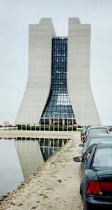
FNAL main building. It's 5:28pm and I'm rushing to get to Ramsey
Auditorium, which is through and on the other side of the main
building.
|

|
Linus at Fermi Lab
|
Authors note: Slashdot posted this page on their site but the article
really starts at http://ssadler.phy.bnl.gov/adler/Torvalds/comdex99.html
. It's an introductory page which puts my FNAL and Comdex write-up into
perspective. If you are only interested in what Linus had to say at FNAL,
then just read on.
Editor's note: In the original article on Adler's website, many of the
inline images display a larger copy of themselves when clicked on. These
larger images are not included in the Linux Gazette version, to
keep the total size of the Gazette small.
|
 A clear day for flying. Long Island Islip Airport lies ahead.
A clear day for flying. Long Island Islip Airport lies ahead.
|
April 19th, the day of Linus's talk at FNAL, dawned to be a gorgeous
day on Long Island. I'm going to fly Southwest, the 1:20pm flight,
through Baltimore, and transfer to the Chicago Midway flight. I'm to
arrive in Chicago at 4:30pm. Linus's talk is scheduled for
5:30pm. Trying to get my reservation setup to fly out to Chicago was a
mess. Originally, Linus was scheduled to talk at 7:30pm. And I planned
my flight scheduled around that. (4:30pm arrival, 7:30pm talk, no
problem.) But, that changed when I got a message about Linus's talk
being rescheduled. By then I had no choice except brave the tight
time table. So, I had a relaxing morning, enjoying some quality time
with my wife. Flight time came and off to the airport I go. With such nice
weather, all flights were on time. (The Free Software Gods were
looking after me...)
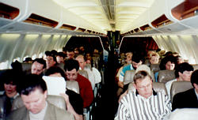
4:25pm arrives, the plane wheels up to the midway terminal gate, and
bam, I'm off running. Those 1970's or 80's commercials of OJ Simpson
running through airports was the title theme of my thoughts at the
time. (Where is the running lane!!!) I hit the National Car Rental
booth. Two rather relaxed attendants are shooting the breeze. I
quietly but firmly tell one of them that I have a rental
reservation. ("Get me my car now!!!") The attendant gets a little
nervous, shuts up and starts processing my car rental. The rental cars
are located in an adjacent parking lot just out side the main terminal
building. No need wait for a bus to take me to the car rental lot,
(again, the Free Software Gods are looking over my shoulder...) Within
10 minutes after landing, I'm in my car looking for a way out of the
airport. For those of you familiar with the Chicago area, I got on I-55
south (south west really...) to I-355. I-355 north to I-88 west. Turn off
on 59 heading north. From there you hit Batavia rd west and bang, your
at the FNAL main building. 4:45pm, on I-55. 5:00pm 355 north, 5:08 I-88
west. 5:18pm 59 north. 5:20 pm Batavia rd. 5:25pm FNAL main
building. 2 minute walk to Ramsey Hall, site of Linus's talk. (Mind
you I did not break any traffic laws. The Free Software Gods will
attest to that. You can take the issue up with them.)
|
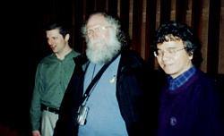
My first shot of Mad Dog. Dan Yocum is on the left and G P Yeh on the
right.
|
Ramsey hall is an elegant auditorium. It has a red motif to it. Red
carpeting and seating is the cause of that. Many a physicist have given
talks in this auditorium, including
Stephen Hawking. Now it's Linus's turn. The guy who organized this
event is named Dan Yocum. He wrote to me in an e-mail that it was easy
to get Linus to come out to FNAL. He e-mailed Mad Dog an
invitation. ("It's easy, I just asked!") I
later learned that Linus and Mad Dog had a rather thorough tour of the
Lab. This included some accelerator facilities, one of the large
collider detector facilities (CDF) and the computing center. Now it
was Linus's turn to entertain some question from the audience. In
some e-mail exchanges with Dan, I told him that I may not make it to
Linus's talk and that his Comdex keynote address would probably be
very similar. Dan replied telling me that Linus hates speeches. His
plan was to make this a question and answer session. He wanted to hear
from the physicists and not to hear himself talk.
|
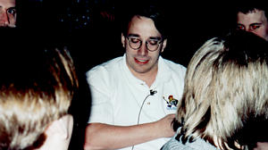
Linus sitting amongst curious Ph.D. graduate students answering
questions before his talk. This shot was taken seconds after I saw
Linus for the first time.
|
You have to walk through FNAL's main building to get to Ramsey. I got
there, went down to the front seats so that I could get a good
position from where to take some snaps of Linus giving his talk. I
put my notebook down and looked around to see if Linus was around. I
was sitting on the right side of the auditorium. I looked over to the
left and noticed a cluster of people. The first one who stood out was
this guy with rather long beard, and frizzy white hair. It took a
minute, but soon realized he was "Mad Dog". Out comes the camera and I
walk (rush?) over to the left side of the auditorium, go right up to
Mad Dog and take his picture. He looked at me like, who the hell are
you! I waved at him or something to try and let him know that I'm a
friendly guy, not this weirdo maniac running around taking pictures
of strangers. I then turn to my left and sitting amongst a bunch of
young guys, I see Linus. I remember the phrase going through my head,
"There his is, Linus". He didn't notice me, he was too busy talking to
the guys who were sitting next to him. Again, I take my camera, try and
get as close as I can, zoom in and snap, I take another picture. I'm
in this rather "fanatic" state right now. I'm not really thinking
clearly, and all I can seem to do is take pictures of the guys who in
reality are total strangers. I stand around and try and take some more
pictures. I then go over to Mad Dog, introduce myself, give him my
card and ask a bunch of dumb questions he really does not want to
answer. Finally, my mental state settles down a bit, and I manage to
get myself back over to my side of the auditorium from where I sit
down, take out my note book, clear my head, and try to take some
sensible notes of the talk.
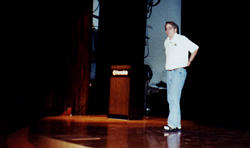
With that, Dan Yocum gets up, and starts the standard Fermi Lab/Ramsey
Hall tradition in introducing speakers. He introduces John Hall, and
in turn John introduces Linus. (I've seen it worst at BNL where there
were 4 introductory speakers ...) John gets up and starts in with this
story about how he met Linus 5 years ago at a DECUS meeting in New
Orleans. He gave some specifics about getting Linus's trip financed,
(I thought I had it tough) and then some detail of Linus at the New
Orleans convention. The one bit of John's introduction which stuck in
my mind was his piano analogy. If one sits down to play a piano, the
pianist can get a feeling for the quality of the piano as he plays
it. A rough piano has a rough feeling, a great piano has a great
feeling. It's in the touch. At the New Orleans conference, a Linux
installation was underway, I believe headed by Mad Dog himself. He
heard a voice over his should saying "Can I help you?". It was Linus,
offering assistance in getting his Linux kernel up and running. Mad
Dog tells the audience that within about 10 minutes, with Linus's help,
Linux was up and running. (I can't remember if Mad Dog mentioned the
hardware specs of this machine.) In any case, Mad Dog, keyboarding on
this machine, was getting that first feel of Linux. 10 minutes later
he made a mental note. Linux was going to be inevitable. It has that
feel of a great piano. He continues on to talk a bit about his
relationship with Linus which is clearly a deep one. With that, he
ends and Linus comes up on stage to start his talk. Or rather his
question and answer session.
Linus starts by saying he does not like podium and thus will not stand
behind one for this Q&A session. He has this wireless mike which Dan has
hooked him up with. I also notice that the FNAL media guys are
recording this session for posterity, so if you don't like my write-up,
you can contact them to get a full playback of Linus's talk. In
any case, Linus starts off with a very brief history of Linux. It was
1992(?), he had a PC, but there was no Unix available for it. Since,
and I quote "he was the best programmer since Jesus," he would fix
that. He would write his own Unix like OS. So off he went and wrote
it. The concept that need fosters development was key in getting the
Linux kernel going and has been key through out all of its
development. And then he did something which was, as he says, the
most important decision of his life. He posted the code on the
Internet, via some news group and asked for feedback. That he got. He
expected people to download his code, run it and tell him whether it
works or not. "Linus, this really sucks!" He got some of those
responses; but more importantly, he got code back in the form of patch
fixes and enhancements. And from then on it was history. With that he
ends his introductory talk and starts in on the questions.
Dan Yocum starts it off by asking about the 2.3 kernel and/or plans
for large files systems (i.e. file system journaling.) A good question,
since in High Energy and Nuclear Physics there is a big need now for
this type of file system. Petabytes of data will soon be recored and
file systems which can handle this type of data load will be
necessary. (Maybe not a petabyte file system, but terabyte file systems
will be a must.) Linus's answer to that question was that up to this
point, large files systems were not an issue. He reminded us that back
in the days when he was starting the kernel, there was a 64 Meg
partition limit which he had to solve. He then said something about
how new users bring new problems and how this was the "development
model" for the kernel.
At this point my notes get rather fuzzy so I'm just going to
paraphrase from what I can decipher from them.
Someone asked about security issues with Linux. Linus said that people
are keeping after the bug fixes. From my personal experience with Linux
and the Red Hat distribution, this is the case.
Someone asked about addressing more than 2 Gigs on a 32 bit
system. His answer was to use a 64 bit machine. Linux is fully 64 bit
compliant.
There was a complicated SMP question to which the answer was that 2.0
and to some extent 2.2 are really a single spinlock SMP
implementation. Linus will work on making it more fine grain.
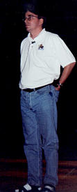
He then talked about how one should not design for the theoretical
perfect implementation since this will screw up another
implementation. The kernel lives in a world of diverse needs and one
needs to try and fit them all in. Therefore no one need gets all the
attention but all needs are tended to some extent. This type of
clear-headedness of Linus is an indication to me as to why the kernel
has gotten as far as it has.
There was a question about capabilities. I believe this is like
splitting up the super user function into separate users through
access control lists. Theoretically it's a good idea, but in practice
it's too complex. Most of the time, one sets up the system in the wrong
way, making it less secure. He claimed it's a feature which needs to be
added to Linux just so that one can check it off on the "Linux can
do this" matrix, but then have a README on how to disable it.
Someone asked the copyright question. Linus talked about the license
he released his original kernel code under. Basically, its intent was
that anyone could use it, distribute it and modify it. But the
modifications had to be freely distributable as well. The people were
starting to sell the Linux kernel at computer shows by charging a
couple of bucks for the floppies. They asked Linus if this was
OK. Clearly, Linus said that it was obviously OK, since he wanted the
code to be distributed and could not expect people to lose money on
the distribution cost. So he modified his license. I'm not sure
whether he modified his license further, but the fact is that he
eventually switched over to the GPL license. He said that it was an
awful piece of legalese but it fulfilled all his requirements. Also,
the one bit of software which it really depended on was the GNU C
compiler. That played a role in the adoption of GPL for the Linux
code. Again, the main emphasis was that the source code had to be
available to the "community" as well as the modifications, which were
brought back into the Linux source repository.
A question on the Merced was asked. Linus said he would not sign any
Non-Disclosure Agreements. The reason for this is that he does not want
to be put in the situation where he cannot release his source code due
to conflicts with an NDA. A very wise choice on his part. He lets
others sign the agreements, which has been done by others. Notably,
there are some people at CERN who are working on the Merced
port. Linus defended Intel's move on asking for NDA's to be signed. It's
done so that Intel can keep control over the flow of the technical
information into the public domain. Once the CPU has been fully
released by Intel into the "market," then they certainly want every one
to know how to use it. But before that, it's clear that they need to
keep their specs under wraps to keep the competition at bay. The big
problem with the Merced is in the compiler technology sector. All the
kernel needs is a version of gcc that will generate
a Merced executable. It's up to the gcc guys to get it to generate
Merced instructions. Linus is confident that once gcc is
ready, which should be by the time the Merced is released, then the
Linux port will follow within a couple of days or weeks.
Someone asked what is better, one really fast CPU or many not so fast
CPUs. Linus's answer was that the best SMP system for the Linux kernel
is a dual CPU one. If one were to build a Beowulf type cluster, one
should do so using a set of dual CPU systems.
There was a question about SVGAlib -- what its viability was for the
future. Linus's response to that was that 2 or 3 days after working
with X11, he decided never to go back to console mode. All he needs,
graphics wise, is to have 15 xterms open with the kernel compiling in
one of them. He kept reminding the audience that all he really likes
to do is compile the kernel. The fvwm2 window manager coupled to 15
concurrently opened xterms was all the graphics functionality he
needed. This question was one directed towards games. He said that
there was a good OS for running games called Windows. He claimed that
MS admitted to the fact that they could not write an OS very well and
basically kept out of the way of the software games developers by
letting them take over the system when the game app was active.
A question was asked about how he decides whose code is to be included
in the kernel. He said that drivers were no-brainers. Since the code sits
outside the kernel, he tends to include them without much
thought. When it comes to adding something that exists in kernel
space, then his main requirement is that there be at least one person
who will take charge in maintaining it. My take on this is that items
like the TCP stack or the kernel version of NFS etc. are coordinated
and maintained by someone besides Linus.
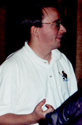
A question was asked about the recent benchmark comparison between NT
and Linux. The
benchmark was done by Mindcraft, and the results showed that Linux
was 2 or 3 times slower at file and web serving than NT. There was an
interesting story behind this. Linus was paneling on a session down
in Atlanta. There was a Microsoft representative on the panel. Linus
was presented with this benchmark report from Mindcraft, who seem to
have a lot of credibility in the IT world regarding doing
benchmarks. The report was presented to him just as he was sitting
down at the panelist table. This left Linus in a rather awkward
position of having to defend Linux against NT with this Microsoft Rep on
the same panel and not having any time to digest these benchmarks. It
turns out later that this company specializes in Microsoft OSes and
has done a series of benchmarks comparing NT with Solaris etc. All the
benchmarks come out in favor of NT and the large Unix companies (Sun
etc.) have to mount a PR campaign to refute the results. Linux in this
case has no corporate machine backing it up with resources to fight
back. What surprised Linus was that the journalists came out
defending Linux. It was the journalists who came out questioning the
validity of this Mindcraft benchmark. As of this time, it seems that
the benchmarks are going to be performed again, this time with an
equally well-tuned Linux system.
Someone asked him if he ever has talked with Bill Gates. His reply was
that, no he has not, but if he did, he would "be talking money." (His
palms rubbed together as he was finishing his answer.)
More questions on benchmarks. The conclusion to his answer on
benchmarks is that the best benchmark is your own application. It's not
easy since this requires the vendors to give you access to their
hardware and you have to do some porting. The bottom line is that your
own application is truly the best benchmark.
Someone asked about frame buffers or rather how one could get a DVD
app ported to Linux. Linus said that most of the work is in setting up
the hardware. Once done, the hardware takes care of getting the DVD
imagery onto the screen. The trick is to get this to interface to
X11. He didn't seem to have any immediate plans on taking on this
project. Also he mentioned that DVD encryption is a trade secret. I
assumed this means that an open source application would be difficult
to implement.
Someone who works at Lucent asked a question related to drivers for
modems made by Lucent. The question lead to a discussion about how one
can get companies to release the specs of their hardware. Linus made a
point about how sometimes it's not a question about keeping the
engineering design behind some gizmo a secret and thus keeping a market
advantage. But rather one wants to keep secret the bad engineering
that went into making the gizmo. He hypothesized an example of a gizmo
that in order to get it to run, you need to write to xyz registers in
some specific order, then toggle some interrupt lines, followed by
holding the reset bit in the CSR high for 30 clock cycles
etc. etc. This kind of kludgey design is the real reason behind not
releasing specification. It's all hidden in the binary version of the
driver.
Someone asked about UDI, Unified Driver Interface. Linus replied that
it's in the Nice Theory stage but he is keeping an open mind about
the idea.
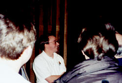
Some question was asked which led to some interesting statements by
Linus. This regards software development through Internet
collaboration. Talk is very cheap, and he never takes anyone at face
value. The best way to collaborate with Linus is to show him code
that works. That is what he want to see. Otherwise, my guess is that
unless your ideas are of obvious importance, they will go ignored.
A question came up about GUIs. He as no interest in GUI design or
interfaces, and has no influence in current GUI theological
discussions ongoing right now. (My guess is that this refers to
GNOME vs. KDE type of theoretical friction.) He is happy using fvwm2
and his 15 xterms to apply patches to the kernel and rebuild it again
and again.
I asked a question about how he maintains the Linux source
repository. I wanted to know if he used CVS. His reply was that he has
his own method. I should think of it as lovingly hand-crafted
maintenance of the kernel source. He does not use CVS because he does
not need it. He is the only one who applies patches or updates the source
code, and he does not care to use the history logging mechanism CVS
provides. He does use CVS at work, so he knows what it's capable of
doing, but chooses not to use it.
By this time we started to run out of time, and a few more questions
were asked. From these questions, the following general statements
were given by Linus. MS is a good OS for running games. The bottleneck
in the development cycle of the kernel was the users. A project
should never grow beyond the scope of what can be kept in one person's
head. My take on this is that the kernel is broken up into many
"projects," each one with a leader in charge of it. And whatever that
one person is in charge of, he must keep the whole concept and source
code layout/structure/functionality in his head. Keeping "things"
modular is the Unix way.
Developers grow linearly, while the users
exponentially. The users of Linux have grown by 7 orders of magnitude,
and his goal of global domination is only 2 orders of magnitude
away. "What's 2 orders of magnitude after growing 7..." (Global
domination is in reach.) Avoid black and white when trying to solve a
problem. There is never a silver bullet which can be applied to a
project or problem to "fix it".
|
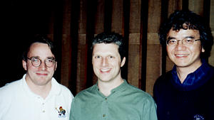
Linus, Dan Yocum, and G P Yeh. Dan works in the FNAL IT department
providing Linux support to anyone who needs it at FNAL and
G P on CDF working on "event builders" for CDF. A bunch of Linux boxen
tied together with an ATM switch.
|
The next great challenge for Linux is
to conquer the desktop. When it comes to servers there is no
loyalty. Servers are black boxes that sit in windowless rooms and
are used to serve files and printers etc. As soon as a newer, better
server comes out, the old one is replaced. No questions asked. This is
one of the reasons why Linux has been able to penetrate the server
market. It's the easiest one to crack. The desktop is totally
different. There are very strong loyalties attached to desktops. If a
new, better desktop comes out, people tend to get their shotguns out to
defend their old, not-so-good technology, often resorting to falsehoods
in order to defend them. Linus wants people to get used to using
Linux for their desktop. Linus also wants to see the day when he can
walk into CompUSA or equivalent store and find that one has a choice in
the OS one wants to run on their new PC. He does not want to see one
default OS, and does not want people to default to Linux either.
Linus concluded with the statement that there has always been a
physical invariant regarding building his kernel. This being 12
minutes. It always took 12 minutes to compile the kernel. When he
started out with his 386, it was 12 minutes, when he moved up to a
66MHz 486, the code has grown such that it still took 12 minutes. The
growth of the code and the speed up of the Intel technology kept pace
with each other such that the kernel compile time always took 12
minutes. This has changed recently. With his quad CPU development
system, it now takes him 73 seconds to build the kernel. He admitted
that the hardware development has now been recently out-paced his
software (kernel) development.
With that, a physicist from FNAL named G P Yeh, who is one of FNAL's
strongest Linux advocates, closed the session by thanking Linus for
all his work. FNAL is now using Linux in a big way to process all
the data coming out of the large collider detectors that will start
taking data within a year or so. The data rate from these detectors is
expected to increase 200 fold from the last time they took data. This
is due to an upgrade to the Tevetron called the Main Injector. It's
designed to increase the proton flux by a lot, and thus 200 times
more data will flow out of the detectors. Linux will play a big part
in analyzing all this data. (I can attest that Linux is playing a big
role at BNL as well. It will be used on about 500 processors to
analyze the data coming out of the 4 detectors being built for the
Relativistic Heavy Ion Collider. The RHIC is scheduled to turn on
this summer, and by this coming winter the Intel Linux farm will
start its first production data processing.)
|
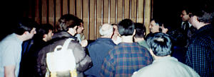
The audience crowds Linus after his talk.
|
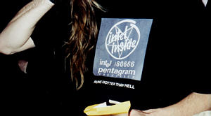
With that final congratulatory announcement, the talk came to an
end. People got up and scattered about. I headed over to the left side
of the auditorium where Linus and Mad Dog were located. Linus was
surrounded by people asking questions. I was out of earshot, so I
could not listen to the back and forth between the guys and Linus. I
did get a chance to get over to Mad Dog and reintroduce myself. My
intent was to invite him out to BNL if and when he and/or Linus got
out to NY. I'm not sure if Mad Dog is interested in seeing yet another
collider facility, but he did encourage me to try and contact the
Bizzar Show people and set up a talk or panel. Something with a topic
along the lines of Linux in Physics. I told him I could do that, and
I'll try to follow up with the organizers of the Bizzar. I then hung
out with the Linus crowd for a bit, taking a couple of pictures. There
was this one guy who had on a tee shirt with an Intel logo announcing
the i80666 CPU. The phrase "Runs hotter than
hell" was written underneath. Linus told the guy he like his tee
shirt. This guy then took off his shirt so that Linus could see the
back of his tee shirt. It sported a picture of Bill Gates with horns,
looking like the devil. After another snap or two, I had my chance to
introduce myself to Linus. I gave him my business card (not that I
do any business, it's more like an identity card), and thanked him for
his work on Linux because it's made our lives some much easier. He
replied saying that he did not do it for me, he was just doing it for
himself and the users are just a big pain. "Yeah", I replied, "Users
are loosers..." I was a bit flush as I was talking to him, I really
don't know what I was saying. The fact of the matter is, Linux has made
my life a lot more complicated. Ever since I installed Linux on my
first PC 3 years ago, (built from parts bought at a computer show),
I've been so tied up in this Linux Open Source thing, and it's become
such a central theme in my work, that I can hardly say it's made my
life any easier. It's made it more fun, and it has save BNL and FNAL a
lot of money. It has saved millions of dollars at FNAL alone. But as I
said, I really wasn't thinking straight since I was talking to Linus for
the first time in my life.
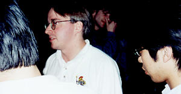
So I've had my chance of meeting Linus and Mad Dog. I must say that
Mad Dog comes across as a very serious, level headed guy. It's hard to
imagine someone with such a fantastic beard being so calm and
decisive. My guess is that he has to be in his line of work at DEC
(now Compaq?). I would also venture to guess that once you get to know
him, and he gets to know you, if you manage to get a beer in his hand,
then you're in for a ruckus of a good time. Linus impressed me as being
very down to earth. He is not aloof and was willing to take time to
talk to those interested in talking to him. He was very generous with
his signatures at the end of his talk. He also impressed me as someone
who has a practical approach to solving problems. In many of his
answers, he alludes to the fact that one should follow the middle
road. Don't make a project too grandiose. "A project has to sit inside
one person's head", "There is no silver bullet", "Never design to the
100% theoretical limit", and on and on. I'm sure that this is one of
the reasons why Linux is as successful as it has been. He also
mentioned during his talk that he is willing to listen to new
ideas. He said that it always starts off being a really dumb
idea. But the idea is not dismissed. (Maybe there are a lot of ideas
that are really dumb which he has dismissed.) But the point is that the
idea would be knocked around the kernel development news group or
e-mail list group and evolve into a not-so-dumb idea and finally into
something important that could be included in the kernel.
I left Linus and Mad Dog behind in Ramsey. My plan was to stay at FNAL
for the night and drive in early to catch the opening keynote at
Comdex. Bill Gates was giving this keynote. From Linus to Bill, this
was going to be a real contrast.
Copyright © 1999, Stephen Adler
Published in Issue 42 of Linux Gazette, June 1999
![[ TABLE OF CONTENTS ]](../gx/indexnew.gif)
![[ FRONT PAGE ]](../gx/homenew.gif)